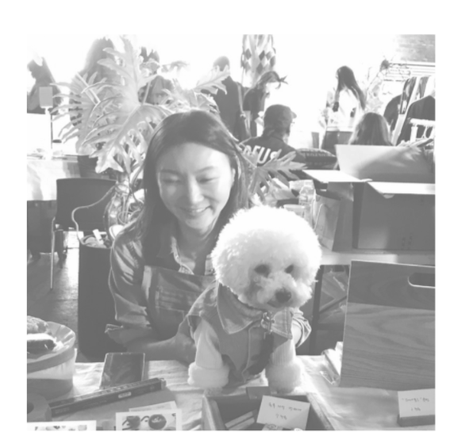

- About Yunhee Jung
- Skills
- Work
About Me
I completed an 8 month, full-time joinery course at the Daegu carpentry school in South Korea, graduating in June 2017.
After graduation, I rented a shared workshop space and took commissions for furniture while also making smaller pieces that I sold at weekend markets.
During this period I also started to experiment with combining other materials with wood such as leather, brass and fabric.
Completing individual commissions involved a whole new set of skills that I had to develop, including marketing, liaising with customers and managing the logistics around packing and delivery.
I moved to London in September 2019 with my family and now make private commissions from a shared workshop space in Clapton, East London.
